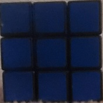
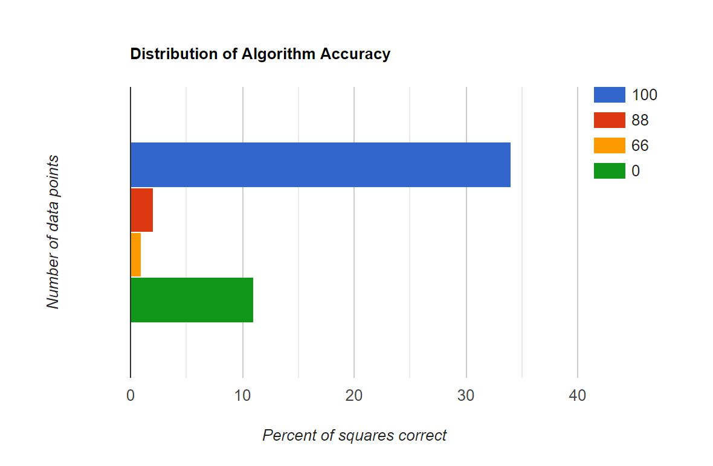

Rubix's Cube Recognition
Tyler Parowski and Sarah MaxseinerFall 2020 ECE 4554/5554 Computer Vision: Course Project
Virginia Tech
Teaser Figure
Abstract
We wish to be able to take a picture of a rubix cube and determine what colors reside on each of the spaces on a face. Our approach was to take a picture and find the rubix cube by using edge detection, Hough Transform, then to use an algorithm to determine the color of each square. This was achieved with additional small steps described fully in the Approach.Introduction
In this project, we are trying to identify the colors on the face of a single Rubik's Cube. While it might seem easy for humans, we wanted to implment it withe Computer Vision topics. We are mainly using edge detection to find the edges of the cube, we are also using Hough transform to be able to find lines in the Canny edge detector output. In addition, we will be doing some color identification given 3 different lighting conditions. This can be used to eventually be able to solve a rubik's cube given video or picture imput.Problem Statement
In this project, we will be using computer vision techniques to be able to identify the colors in a single side of a Rubik's Cube displayed in a picture. Our input will be a picture with one face of a Rubik's Cube showing. The output of our project will be a model outputted to the command line. This model will be able to define what colors are on the current side of the cube. Sample output is shown in the Approach section. For this project, we used openCV functions to do edge detection, Hough Transforms, and contours. The process of determining the colors and finding the bounding box was created by the group members of this team.Approach
There was several steps to be able to identify the colors on the side of a Rubik's Cube. The first step was to find the edges in the image. We used the Canny edge detector, sample results are show below. Original Image:This is the image cropped to the squarified bounding box

The image is then seperated into 9 sections where every pixel is looked at one after the other and compared to a self-gathered dataset to determine what color we believe that pixel is. The most commonly appearing color is then selected to be that section of the cube. Results are then outputted to the command line using a function that simply takes the results from the last function.
Experiments and results
When it came to testing our full data set with out fully implimented code, We found that of the 48 images we tested against, 34 were perfect identifications of the faces, two results only identified 8 of the 9 faces correct, and one sample only had 6 of the 9 faces correct. This led to a success rate of 75.9% with our data set. It is worth noting that a few examples in our "data" folder were not used. This is due to the image having multiple faces of the cube shown at once, which our code was not created to be able to handle. A graph displaying the accuracy of the algorithm is shown below.

Qualitative Results
The figures below show a sample output. This sucessful case shows the input and output of the application. As you can see, the application was fully correct when identifying colors.